| Solver | Minimum recommended number of cells across flow paths | Sensitivity of results to flow path orientation |
|---|---|---|
TUFLOW Classic |
4-6 |
Low |
TUFLOW HPC without SGS |
6-8 |
Medium |
TUFLOW HPC with SGS |
3-4 |
Very Low (assumes terrain data is a finer resolution by a factor of 2 or more) |
3 Hydraulic Modelling Fundamentals
This chapter of the Manual discusses key considerations that should be addressed during the design phase of a hydraulic modelling study, prior to the commencement of the model build. Consideration of how the model is to be schematised and selection of key model parameters may have a significant influence on the accuracy, stability and simulation time of the model, and may avoid redundant work later in the study.
3.1 Schematisation
3.1.1 General Guidance
General guidance on model schematisation and best practice procedures is freely available from numerous industry sources. These typically include discussion on data requirements, model conceptualisation, calibrating / sensitivity testing, etc. Examples of such guidance documents are:
- Two Dimensional Modelling in Urban and Rural Floodplains Stage 1 & 2 Report Babister & Barton (2012);
- Fluvial Design Guide Environment Agency (2010);
- Integrated Urban Drainage Modelling CIWEM (2009).
Specific TUFLOW guidance relating to model schematisation, model resolution, timestep and simulation time are discussed in the following sections.
3.1.2 Model Dimensions: 1D, 2D or 3D?
Hydraulic calculations can be performed in one, two, or three spatial dimensions. A brief description of each of these approaches is provided in this section, along with a summary of strengths and limitations.
3.1.2.1 One Dimensional (1D)
One dimensional (1D) models confine the water flow to a single dimension, specifically forwards or backwards along a defined path. The path can be a river or drainage channel, an underground stormwater pipe or other similar settings. It is possible to have a network of 1D paths with junctions, representing a network of tributaries and rivers, or an underground stormwater system.
A 1D network is comprised of links (or channels/paths/conduits) and nodes. Water volumes are associated to nodes, and velocities/flows/conveyance are associated with the links. Velocities are cross-section average velocities, i.e. flux (or flow) divided by the effective flow area. Nodes have known storage geometries, from which water elevation can be calculated from the nodal water volume. Links have known cross-sections (bed elevation and bed friction data discretised across the section) or a shape (such as a circular pipe), from which flow area and conveyance can be calculated from water levels and longitudinal slopes.
TUFLOW 1D (ESTRY) and EPA SWMM are included within the TUFLOW Classic and HPC executable download as available 1D solution scheme options. Other third party 1D schemes are also dynamically linked with TUFLOW Classic and HPC.
Strengths
The models generally have a very small number of computational elements (links and nodes), and require little computational effort to run. Results usually take a matter of seconds or minutes to generate. This allows for rapid iterative development, automated optimisation or calibration, and large numbers of scenarios to be modelled.
1D models are naturally suited to pipe networks. There is little to no benefit in attempting to model pipe networks in two or more dimensions.
Limitations
Significant effort is required to develop the input data required for 1d model domains. The nodal area tables and path cross-sections must be defined for each element, meaning a model of even 100 elements requires much effort to construct compared with 2D or 3D domains.
1D models are not well suited for situations where surface channels break out onto floodplains. While it is possible to define nodal area tables to allow for storage on floodplains, along with links defining interconnecting flow paths, the model is reliant on the user having correctly identified the topology of the flow network on the floodplain, a priori. The flow paths in a flood model are also assumed to remain fixed or constant in terms of flow direction during a flood event, which may not be the case.
1D models do not inherently compute energy loss mechanisms beyond bed friction. Energy losses caused by turbulent interaction within a cross-section (tight bends, confluences, spurs/dykes etc) must be manually accounted for with loss factors estimated by the user.
Energy loss caused by structures must be manually accounted for with loss factors or models specified by the user.
The model does not capture inertial effects such as super-elevation, which in some situations can change lateral flood levels by half a meter or more across a river bend.
Flow path velocities are cross-section averages. 1D schematisations are unable to represent variations in velocity across the width of a cross-section, nor any depth dependent properties.
3.1.2.2 Two Dimensional (2D)
Two dimensional (2D) models allow water to move in two lateral dimensions. A 2D model is discretised into cells that have a defined geographic area, and faces which connect one cell to the next. Cells are typically triangular (three sided) or quadrilateral (four sided) and are well suited to modelling surface water such as flows in rivers/creeks, floodplain inundation, urban surface water, and estuarine and coastal waters.
In the 2D modelling framework water volumes are associated with 2D cells, and velocities are calculated at cell faces. Velocities are depth averaged. Cells have known storage geometries, from which water elevation can be calculated from water volume. Faces have known cross-sections (bed elevation and bed friction data discretised across the face), from which flow area and conveyance can be calculated from water levels.
TUFLOW Classic and HPC are 2D solution schemes, and their models bare schematised using a grid of square cells. They are not compatible with a flexible mesh design that constructs a network of irregular shaped cells. Classic and HPC do allow different 2D cell sizes to be incorporated within a single model, however, the cells are always square. HPC’s Sub-Grid Sampling (SGS) feature significantly reduces the negative side effects of using a fixed grid of cells.
Strengths
2D models are generally much easier to construct than 1D models. Usually high quality digital elevation data are available for the study area, and once the 2D grid extent is defined the process of deriving the cell storage data and face conveyance data is fully automated.
Because velocity is resolved in both transverse and longitudinal dimensions, energy loss mechanisms such as turbulent interaction within a cross-section (tight bends, confluences, spurs/dykes, etc) are automatically accounted for with a turbulence (eddy viscosity) model.
Limitations
Accurate computation of flow along a primary flow path requires resolution of cross-sections within the grid. For schemes that utilise a uniform grid, this requirement can cause the entire model to have a large cell count and an associated computational burden.
Sub-cell energy losses caused by obstructions (e.g. bridge piers), flow expansion (e.g. downstream of a vena-contracta), or in the third (vertical) dimension must be manually accounted for with loss factors or models specified by the user.
Face velocities are depth averaged. The model is unable to represent variations in velocity (or other properties) with depth.
3.1.2.3 Three Dimensional (3D)
Three dimensional (3D) models calculate the water motion in all three spatial dimensions. Computational Fluid Dynamics (CFD) is often used for 3D modelling of flow through complex geometries. CFD software can be extremely computationally intensive, typically solving the full unsteady non-hydrostatic Reynolds-averaged Navier-Stokes equations that describe the flow physics.
Alternatively, the accelerations in vertical dimension can be assumed to be negligible compared to the horizontal dimensions, also known as the hydrostatic assumption. Making this assumption enables a pancake style 3D mesh to be used (i.e. high aspect ratio cells) with a split-operator solution method. This 3D approach significantly improves solution speed compared to traditional CFD. TUFLOW FV is an example of such a 3D model.
Similar to 2D, 3D models also use a network of cells and faces. Volume and velocity data are also associated with cells, with complex numerical schemes available for interpolation between cell and face data. 3D models make the fewest assumptions about water flow, and are suited to situations where there is significant variation of water velocity (or other properties such as temperature and salinity) in all three dimensions. This is particularly relevant for estuarine and ocean environments where density differences in the horizontal plane can affect the flow behaviour.
TUFLOW Classic and HPC are not available in a 3D form. TUFLOW FV supports 3D simulation.
Strengths
Fewest assumptions or sub-models required from the user.
Depth dependent properties accounted for - particularly relevant for modelling flow around bridge piers, complex culverts, tight river bends, estuaries and the coastal ocean.
Limitations
Computational solve time can become long.
Not always practical for catchment wide studies.
3.1.3 Coupled 1D-2D
TUFLOW allows hydraulic modelling projects to adopt a schematisation that couples 1D and 2D within a single model, such that often:
- 1D is used for cross-drainage structures (e.g. culverts under an embankment) and underground stormwater pipe networks. The 1D is coupled or dynamically linked to the 2D domain, which represents the surface flows. An example of this configuration is shown in Figure 3.1. TUFLOW Tutorial Module 3 and Module 5 provide working demonstrations of both configurations.
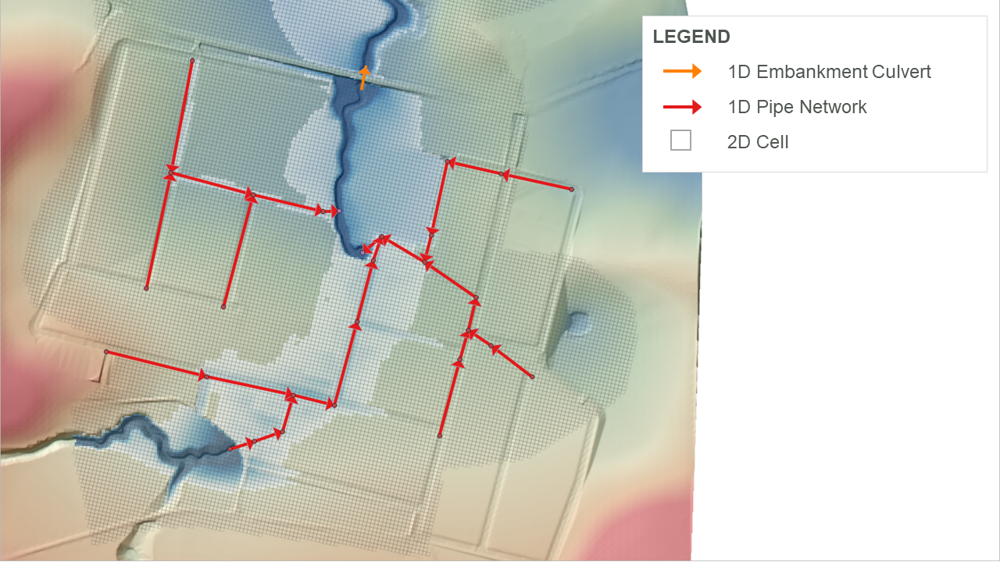
- 1D is used for open channel modelling where the 2D resolution is too coarse to represent the open channel shape. The 1D open channels are linked to a 2D domain covering the surface inundation of adjacent floodplain areas. An example of this configuration is shown in Figure 3.2. Refer to TUFLOW Tutorial Module 11 for a model demonstration.
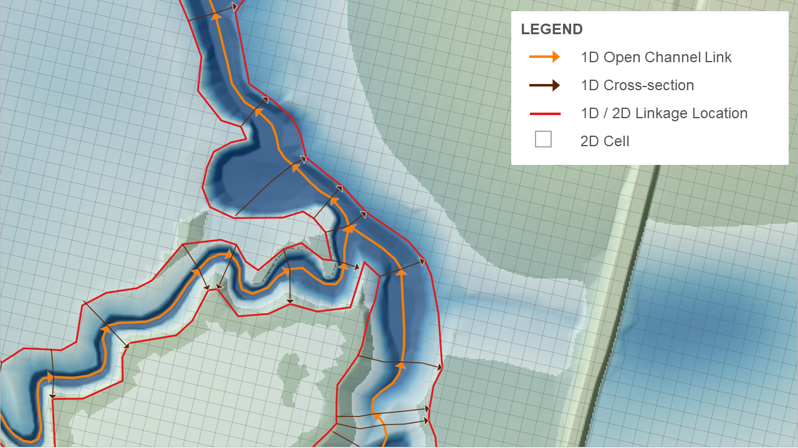
Despite the above, the advent of faster computers, GPU acceleration and Sub-Grid Sampling (SGS) has seen open channels increasingly represented in the 2D domain in TUFLOW models. The key drivers for this are:
- Computing power increases, combined with TUFLOW HPC’s GPU acceleration, have enabled models built today to be over 100 times larger than pre 2018 models (in terms of cell count). The increased computing power means modellers can model at a finer resolution and over larger areas with no simulation time penalties.
- The development of HPC’s 2D Sub-Grid Sampling (see Section 3.2.3), which creates more accurate storage curves for cells and flux area curves for faces, has vastly improved the ability of a 2D model to reasonably predict the hydraulic conveyance of surface channels. SGS is built into all of the TUFLOW Tutorial Modules.
- The development of HPC’s 2D quadtree grid refinement permits use of finer resolution 2D cells in discrete regions (see Section 3.1.4), such as within the open channel areas.
Chapter 10 provides a detailed description of how to implement 1D-2D linking and exploit the above within the TUFLOW suite of products.
3.1.4 Quadtree Grid
By default TUFLOW Classic and HPC use a single 2D cell resolution over an entire model domain. This type of configuration is referred to as a fixed grid configuration. To support 2D modelling at a range of spatial resolutions (which is often a project requirement), TUFLOW HPC models can use a quadtree grid or mesh. The quadtree grid refinement feature supports the recursive division of square TUFLOW cells into four smaller square cells. Up to nine levels of cell size refinement are permitted. All cells in all levels of refinement share a common orientation and the hydraulic computations are a full 2D solution across the entire quadtree grid.
An example quadtree grid is presented in Figure 3.3 and detailed documentation is provided in Section 7.3.1 and Section 10.7.1. TUFLOW Tutorial Module 7 provides a demonstration of this model configuration feature.
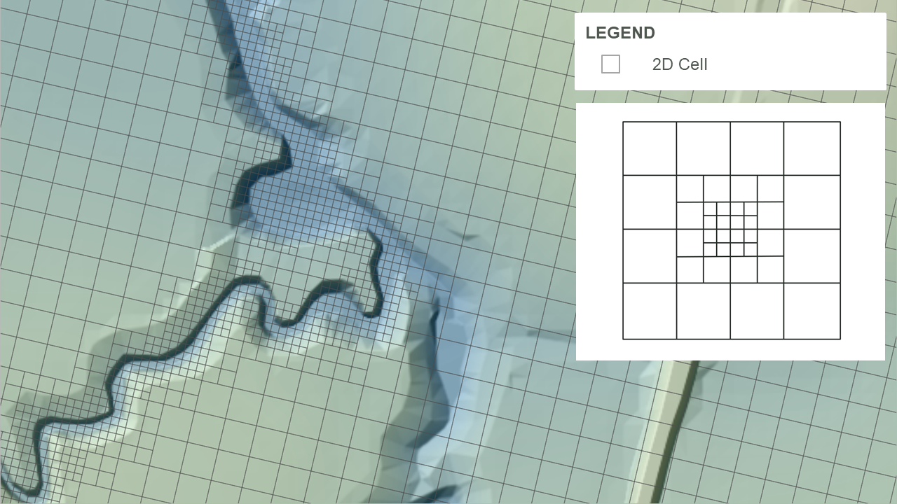
3.2 Model Resolution (Discretisation)
3.2.1 1D Networks
The veracity of a 1D model domain is primarily dependent on the resolution with which on ground conditions are represented. The nature of this representation is typically a result of a balance between required resolution and the commensurate manual setup effort, the latter of which can be significant. Some approaches that can be used in establishing this balance include:
- Carefully determining where and to what extent 1D networks are required in order to address study goals, and
- Combining multiple 1D channels or structures into single model elements where appropriate
3.2.2 2D Cell Sizes
The 2D cell size defines the resolution of the 2D hydraulic calculations. As for 1D simulation, this cell size needs to be sufficiently small so as to reproduce required hydraulic behaviours, but not so small that simulation times are impractical. In order to assist with this cell size selection, Table 3.1 lists general recommendations for minimum cell count (size) relative to primary flow path widths (e.g. creeks or streets), for different TUFLOW solvers.
Resolution may vary from these recommendations if:
- 1D is used for primary flow path definition and 2D only for floodplains: 2D cell size can increase.
- Using HPC’s SGS feature (refer to Section 3.2.3 and Section 7.3.3): 2D cell size can increase.
- Using HPC’s Quadtree feature: 2D cell size can increase outside areas of interest.
- Small cells are contained within deep water flow paths. These settings will slow down models considerably and should be avoided through use of SGS.
More broadly, cell size result convergence sensitivity testing (see Section 3.2.4) is the most robust way to verify 2D cell size selection. It should be completed early in the model development process.
3.2.3 Sub-Grid Sampling (SGS)
Without SGS, TUFLOW samples an underlying DTM only at cell centres and faces when assigning bathymetry to a computational grid. Cells and faces are then effectively flat-bottomed storage boxes and conveyance channels, respectively. This approach discards any higher spatial resolution DTM data that may have been available. As an example, Figure 3.4 presents a 20m hydraulic model grid, overlaying a 1m DTM. In this case only 2 to 3 grid cells span the river channel, and fewer in some of the floodplain channels and road embankments. As such, the sub-grid (sub-cell) scale topography available in the DTM is underutilised and a poor representation of bathymetry is likely. Traditional solutions to this problem would typically have involved specifying smaller cell sizes, at considerable computational penalty.
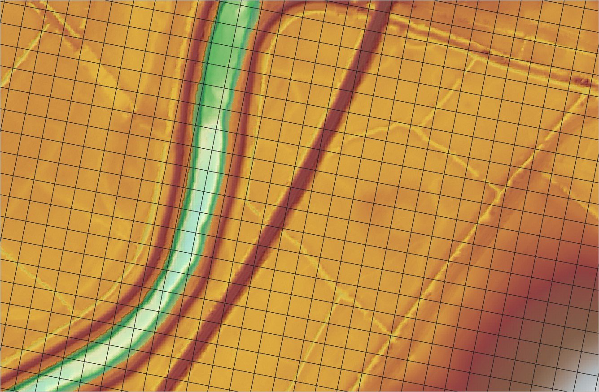
Rather than using a single elevation value for the grid cell storage calculations, Sub-Grid Sampling (SGS) topography sampling extracts sub-grid data from an underlying DTM to develop a non-linear relationship between water surface elevation and cell volume (i.e. storage capacity). SGS also generates a non-linear relationship between water surface elevation and cell face area and width (i.e. wetted perimeter) to improve the representation of fluxes and conveyance across cell faces. As such, whilst the SGS approach still computes a single water level for each cell, higher resolution terrain data than the grid cell size is utilised within the 2D hydraulic modelling, which improves simulated results. The conceptual difference between traditional and SGS topography sampling approaches is presented in Figure 3.5.
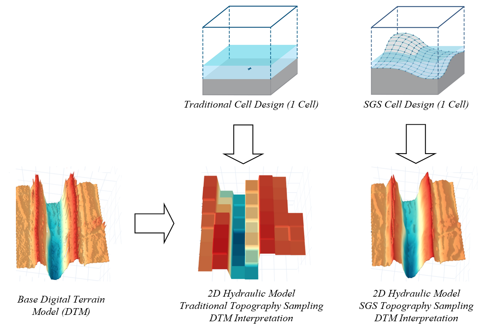
SGS is a feature of TUFLOW HPC - it is not available in TUFLOW Classic. If using TUFLOW HPC, SGS is recommended when the available DTM data is finer than the model resolution. SGS is discussed further in Section 7.3.3.
3.2.3.1 Benefits of SGS
Benchmarking has shown the benefits to be substantial for at least the following situations:
- Catchment scale models flow much more effectively with water not being “trapped” by a coarse cell resolution, and, importantly, excellent cell size convergence (i.e. demonstrating that by reducing the cell size(s) the model results do not demonstrably change) at much coarser cell sizes. Figure 3.6 shows the flow hydrographs for a Quadtree direct rainfall whole of catchment model using two base cell size resolutions. The Hi-Res Quadtree grid has a base cell size half that of the Lo-Res grid. The grey and yellow hydrographs show results from models without SGS enabled and their marked difference in peak flow, shape and timing demonstrate significantly different results between the two resolutions, and a cell size convergence test failure and the need for further refinement of the cell sizes (and much longer run times). In contrast, the blue and orange hydrographs are from the same model, however with SGS turned on and show very similar results between the two resolutions, thereby demonstrating excellent cell size convergence and the ability to use the faster running Lo-Res model for day-to-day modelling.
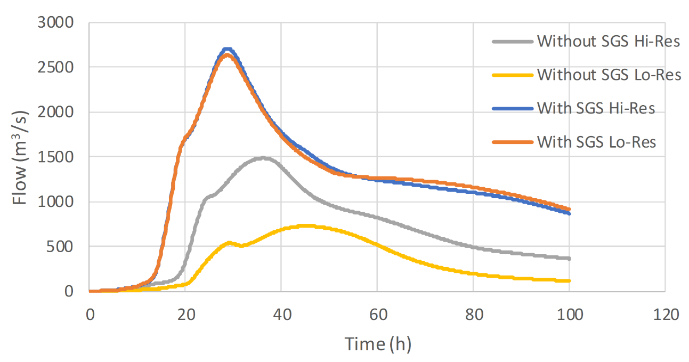
- The sensitivity of results to mesh size is greatly reduced and the sensitivity to mesh orientation is almost eliminated. With SGS a 2D regular mesh model can be rotated or have a change in cell size without impacting the accuracy of the results compared with much greater and sometimes unacceptable changes in results for the traditional elevation per cell approach (Kitts et al., 2020).
- Disturbed flow fields that can be apparent along a “saw-tooth” regular grid wet-dry boundary completely disappear, with no spurious additional head losses generated and the results consistent with a well-designed flexible mesh. This has major benefits in that open channels can now be accurately modelled using TUFLOW HPC using coarse cell sizes at any orientation to the channel, removing the need to utilise 1D open channels carved through the 2D domain. The images and charts below show benchmarking to a U-Bend flume test for without SGS and with SGS. SGS causes a much smoother flow field to occur and importantly the head drop around the bend is correctly modelled with SGS on. The red highlighted cells indicate those cells that are partially wet with SGS on. The charts show the longitudinal profile on the outside (orange), centre (blue) and inside (grey) of the bend with lines being modelled and points measured – as shown, with SGS off the upstream water level is over predicted as shown by the red circle.
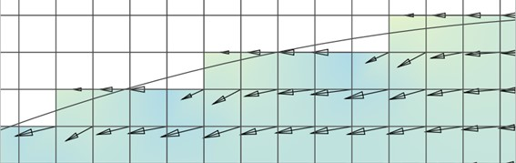
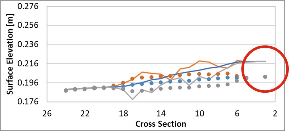
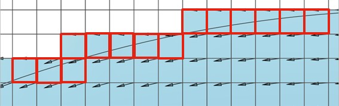
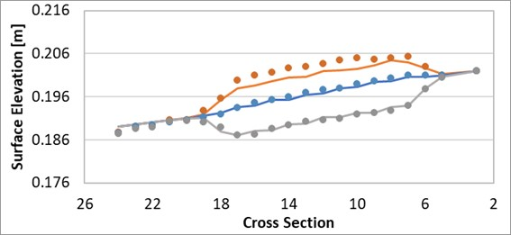
In summary, utilising SGS means:
- The storage and conveyance of the model is more accurately represented.
- Cell Size Result Convergence, discussed in the following section, can typically be achieved using a larger cell size when using SGS, compared to when not using SGS.
- Faster simulation times.
3.2.4 Cell Size Results Convergence
Solution convergence to cell size refers to the tendency for model simulation results to trend towards a common answer as cell size decreases. This behaviour occurs due to the discretisation of topographic features at a finer and finer resolution and should trend towards a closer and closer reproduction of reality. Conversely, by using too coarse a cell size, the results can become affected by the inaccuracies introduced by trying to emulate reality with a poor (i.e. coarse) representation of the topography.
The practical test required to complete cell size convergence involves progressively reducing a model’s cell resolution and comparing the results. The process aims to identify the largest cell size possible to achieve a consistent simulation result (i.e. a simulation result that does not introduce inaccuracies caused by using an excessively large cell size). Identifying this optimum cell size will avoid the situation where an unnecessarily small cell size is chosen, which subsequently translates to longer than necessary simulation times with no significant improvement in simulation result. Figure 3.9 demonstrates this concept. The 40m cell resolution model produces a result at the reporting location that is consistent with the finer cell sizes, whereas for larger cell sizes (60m and higher) the results are not consistent demonstrating they are too coarse to accurately reproduce the hydraulics. As the 40m resolution simulation time is significantly less than smaller cell sizes, it represents the optimum cell size value to achieve reliable results in the shortest run time.
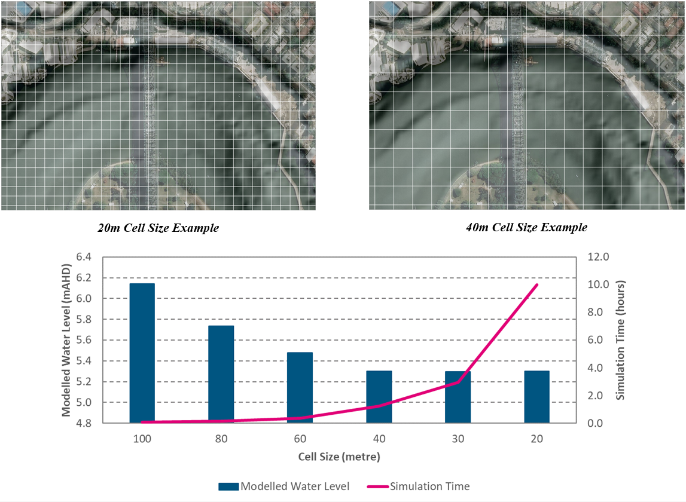
The decision as to whether or not the model results are “converged” is subjective and will depend on the purpose of the modelling and specifically what the “essential results” are. For some studies they may be water surface elevation in a region of interest (e.g. a town), and for another study the essential result may be the peak flow at a particular location. The exact approach taken to establish cell size convergence is up to the user, but we present a selection of methods below that may be useful. Whether one of the following methods are used, or another method, it is important to document all testing and if necessary engage stakeholders in the decision-making making process.
- Comparing flood extent. This simple approach may be performed by overlaying 2D maps of flood extent from sets of results calculated at different cell sizes. The user might start with a relatively large cell size and then keep halving the cell size until the results become acceptably similar. The 2\(^{nd}\) to last (i.e. penultimate) cell size is then the one that may be considered as sufficiently converged.
- Comparing flow response. Another approach, well suited to highly transient models, is to place flow lines across a primary path at important locations, and plot the flow as a function of time for the different sets of results. Again the user may start with a large cell size and refine until the results become acceptably similar.
- Creating a result vs cell size plot. This method is more useful when there is a specific result of interest (e.g. the peak water level at a particular location such as used in the example above). With this method the result of interest is plotted as a function of cell size. This method allows the user to estimate the error between the model result (at a given cell size) and their estimate for the “perfectly converged” result. The largest cell size for which the error is within some defined tolerance may then be considered sufficiently converged. If the resulting plot is “noisy”, then this can indicate a possible error with the modelling setup (e.g. an embankment not being resolved at larger cell sizes, or possibly a model instability). Note, this approach may hide poor convergence elsewhere and is rarely used unless multiple sites are compared and convergence sought for all of them.
- Histogram of variation. This approach involves comparing large lists of results (e.g. water levels at say 100 or more locations) and generating a histogram of differences between the results at the test cell size and the results at the finest feasible cell size. The user may then define, for example, a criterion such that 95% of the results must be within +/- <some tolerance> of the results from the finest feasible cell size. The user determines the largest cell size that satisfies the criterion, and deems that as sufficiently converged.
SGS (see Section 3.2.3) has a significant beneficial impact on cell size convergence. In many situations, a model using SGS may meet the required convergence criteria with a cell size that is much larger than when SGS is not used (Huxley et al., 2022).
Finally, the cell size convergence testing maybe affected by the viscosity formulation (Section 7.1.4). In particular, the Smagorinsky viscosity formulation can cause results to be more sensitive to cell size, and can allow the model results to diverge with decreasing cell size once the cell face width becomes less than the depth. The Wu viscosity formation (default for TUFLOW HPC) has proven to be superior to Smagorinsky in terms of reduced sensitivity to cell size and convergence of results.
3.3 Solution Accuracy
Solving the shallow water equations in one or two dimensions is necessarily an approximation and there are numerous solutions and different assumptions to be made. The following sections discuss various forms of the shallow water equations. Of these, TUFLOW adopts the full dynamic wave form in its 1D and 2D solutions. The full dynamic wave solution is the most accurate option compared to the other mentioned alternative solution schemes.
3.3.1 Fluid Flow Physical Terms
The equations solved by TUFLOW are:
- Conservation of mass (also known as the continuity equation)
- Conservation of momentum
These equations are presented and discussed in 1D and 2D forms in the subsections below.
3.3.1.1 1D Continuity Equation
For water flow within a 1D channel the continuity equation per unit length is:
\[ \begin{matrix} w \frac{\partial h}{\partial t} & + & \frac{\partial (A u)}{\partial x} & = & S(x) \\ \text{rate} & + & \text{divergence} & = & \text{source} \end{matrix} \tag{3.1}\]
Where
- \(w\) is the channel width at the water surface
- \(h\) is the water depth in the channel
- \(A\) is the cross-sectional flow area (up to the water surface)
- \(u\) is the cross-sectional flow area averaged water velocity
- \(S(x)\) is the lineal water source term (volume per unit time per unit length), usually lateral inflow/outflow
- \(x\) and \(t\) are channel flow dimension and time respectively
3.3.1.2 1D Momentum Equation
For water flow within a 1D channel the momentum equation is as follows, noting the eddy viscosity (diffusion of momentum or turbulence) term can not be included in the 1D form.
\[ \begin{matrix} \frac{\partial u}{\partial t} & + & \frac{1}{A} \frac{\partial (Auu)}{\partial x} & + & g \frac{\partial (z+h)}{\partial x} & + & g \frac{n^2|u|}{R^\frac{4}{3}}u & = & S_u(x) \\ \text{rate} & + & \text{divergence} & + & \text{slope} & + & \text{friction} & = & \text{source} \end{matrix} \tag{3.2}\]
Where
- \(z\) is the channel bed elevation
- \(n\) is the Manning’s coefficient for bed friction (units time per cube-root(unit length))
- \(R\) is the hydraulic radius
- \(g\) is acceleration due to gravity
- \(S_u(x)\) is the lineal momentum source term (force per unit volume per unit fluid density), typically used for local energy losses unable to be represented by the 1D form
Note
The hydraulic radius \(R\) is normally considered to be cross-sectional flow area divided by wetted perimeter, or \(A/P\). However, in some software it may be specified as ‘resistance radius’, which is just the water depth over the channel invert.
3.3.1.3 2D Continuity Equation
For water flow over a 2D surface the continuity equation is:
\[ \begin{matrix} \frac{\partial h}{\partial t} & + & \frac{\partial (h u)}{\partial x} & + & \frac{\partial (h v)}{\partial y} & = & S(x,y) \\ \text{rate} & + & \text{divergence} & + & \text{divergence} & = & \text{source} \end{matrix} \tag{3.3}\]
Where
- \(h\) is the water depth in the 2D cell
- \(u\) and \(v\) are the velocity components in the \(x\) and \(y\) spatial dimensions, respectively
- \(S(x,y)\) is the total area water source term (volume per unit time per unit area), usually rain and infiltration
3.3.1.4 2D Momentum Equation
For water flow over a 2D surface the momentum equations, including eddy viscosity (diffusion of momentum or turbulence) but omitting Coriolis acceleration \(\Omega\), are:
\[ \begin{array}{ccccccccccc} \frac{\partial (hu)}{\partial t} & + & \frac{\partial (huu)}{\partial x} + \frac{\partial (hvu)}{\partial y} & - & \frac{\partial (h \nu_t \frac{\partial u}{\partial x})}{\partial x} - \frac{\partial (h \nu_t \frac{\partial u}{\partial y})}{\partial y} & + & gh \frac{\partial (z+h)}{\partial x} & + & gh \frac{n^2\sqrt{u^2+v^2}}{h^\frac{4}{3}}u & = & S_u(x,y) \\ \frac{\partial (hv)}{\partial t} & + & \frac{\partial (huv)}{\partial x} + \frac{\partial (hvv)}{\partial y} & - & \frac{\partial (h \nu_t \frac{\partial v}{\partial x})}{\partial x} - \frac{\partial (h \nu_t \frac{\partial v}{\partial y})}{\partial y} & + & gh \frac{\partial (z+h)}{\partial y} & + & gh \frac{n^2\sqrt{u^2+v^2}}{h^\frac{4}{3}}v & = & S_v(x,y) \\ \text{rate} & + & \text{divergence} & - & \text{diffusion} & + & \text{slope} & + & \text{friction} & = & \text{source} \end{array} \tag{3.4}\]
Where
- \(\nu_t\) is the (kinematic) turbulent eddy viscosity
- \(S_u(x,y)\) and \(S_v(x,y)\) are the areal momentum source terms (force per unit area per unit fluid density), used for local energy losses and atmospheric pressure gradient
3.3.2 Forms of the Equations
Equation 3.1 and Equation 3.2 are the 1D Dynamic Wave Equations, or Saint-Venant Equations. They represent a system of equations that is effectively second order in both space and time, and admit travelling wave solutions (speed \(c=\sqrt{gh}\)). Similarly Equation 3.3 and Equation 3.4 are the 2D Dynamic Wave Equations also known as the Shallow Water Equations (SWE).
As described in the following subsections, the Dynamic form of the equations can be simplified to the Diffusive and Kinematic forms. However, given the available computing power today in personal computers, there is no need or defence for calculating diffusive wave or kinematic wave solutions except for very specific simplified situations. TUFLOW Classic and HPC are strictly dynamic wave solvers, in both 1D and 2D forms. TUFLOW does not experience the inaccuracies and limitations associated with solving the diffusive wave or kinematic wave equations.
3.3.2.1 Diffusive Wave Equation
In the case of 1D, the two prognostic variables, depth \(h\) and velocity \(u\) co-evolve with time. However, in days past when computers were far less powerful, the Dynamic Wave Equation solution was computationally too much work to solve efficiently. At that time in history mathematicians looked to simplify the problem. The first step was to assume that the velocity field is a “slowing evolving steady state solution” (i.e. the time derivative \(\frac{\partial u}{\partial t}\) is considered small and the velocity field is no longer independently evolved); it becomes a diagnostic field that is able to be computed from the depth field. Further, by assuming that solution is “gentle” (i.e. the divergence term \(\frac{1}{A} \frac{\partial (Auu)}{\partial x}\) is also small), the velocity field can be defined as:
\[ |u|u = -\frac{R^\frac{4}{3}}{n^2} \frac{\partial (z + h)}{\partial x} \tag{3.5}\]
Equation 3.1, with the velocity field computed diagnostically from Equation 3.5 is the 1D Diffusive Wave Equation. The equation is second order in space but only first order in time. It does not admit travelling wave solutions, but solutions that diffuse while they advect, hence the name. It requires less memory, less computational effort per timestep, and a larger timestep can be used to progress forward in time compared to the dynamic wave solution.
In situations where the velocity field is gentle and slowly evolving, the Diffusive Wave solution is almost correct. However, as the modeller cannot know in advance just how large the difference between the diffusive and dynamic wave solutions might be, sensitivity testing by comparing results using the two forms is recommended, or the Diffusive form is simply not used.
Diffusive wave solutions are also not shock capturing, and do not accurately predict the location of hydraulic jumps. In 2D the diffusive wave solution is even more incorrect. As the divergence of momentum in both \(x\) and \(y\) is neglected, the solution cannot estimate super-elevation.
For the reasons above, TUFLOW’s solvers do not offer a Diffusive Wave solution.
3.3.2.2 Kinematic Wave Equation
From the diffusive wave equation solution, there are further simplifications that are possible and sometimes used by other software. For shallow flows over steeper ground it is possible to assume that \(\partial h / \partial x\) << \(\partial z / \partial x\), in which case the velocity field becomes a function of depth and channel bed slope, but not a function of \(\partial h / \partial x\). The equation then becomes first order in both space and time:
\[ w \frac{\partial h}{\partial t} + \frac{\partial (A B R^\frac{2}{3})}{\partial x} = S(x) \\ B = \frac{1}{n} {\left| \frac{\partial z}{\partial x} \right|}^\frac{1}{2} sgn \left( \frac{\partial z}{\partial x} \right) \tag{3.6}\]
Equation 3.6 is the 1D Kinematic Wave Equation. It is a non-linear advection equation. It is suitable for computing steady state flows (and slowly evolving steady state flows) in steep channels or over steep terrain (i.e. water surface slope is much the same as bed slope), but is not suitable for flows in low-lying channels/rivers.
For the reasons above, TUFLOW’s solvers also do not offer a Kinematic Wave solution.
3.3.3 Numerical Accuracy
When computing the divergence and diffusion terms in a finite difference or finite volume scheme, it is necessary to calculate the field values at spatial locations that are between the locations where the field data are defined. For example, depth data is considered a node or cell property, and is nominally defined at a node (1D) or cell centre (2D). When calculating the flow through a cross-section (1D) or a face (2D), the depth of water must be estimated at the cross-section (or face), which is located between the nodes (or cells). This process is not straight forward, the methods for doing so broadly fall into three categories:
- Zeroth order interpolation: The field value used at the cross-section or a face is a constant fixed value. This means that the error between the field value used and the “real” solution is constant regardless of cell size - it is a function of cell size to the power of zero, hence the term “zeroth order”. This method is generally not used.
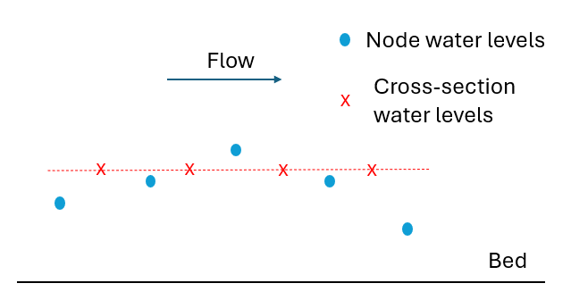
- First order interpolation: The field value used at the cross-section or a face is usually that of the upwind (upstream) node or cell, but in rare cases can be that of the downwind (downstream) node/cell. This means that the error between the field value used and the real solution is proportional to the 1D element length or 2D cell size it is a function of element length or cell size to the power of one, hence the term “first order”. This method is computationally simple and is very stable, but has the tendency to cause any sudden changes (high spatial gradients) in solution to diffuse (smooth out) over time - the same effect as if the model had a high diffusion rate applied. The method introduces an artefact diffusion that isn’t real. In the case of 2D and 3D modelling, any swirls or eddies in the velocity field tend to decay (or simply do not form in the first place).
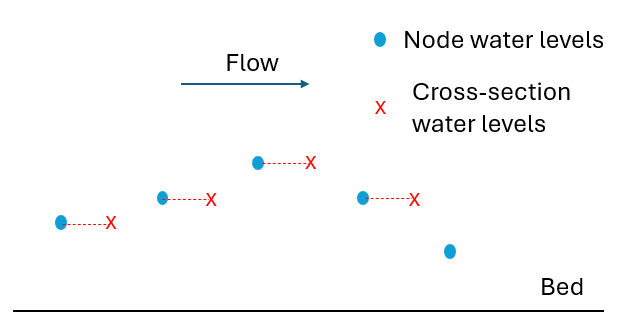
- Second order interpolation: The field value used at the cross-section or a face is usually linearly interpolated between the upwind node/cell and the downwind one. This means that the error between the field value used and the real solution is proportional to element length or cell size squared - it is a function of cell size to the power of two, hence the term “second order”. Pure linear interpolation on its own is known to be unstable - the solution tends to develop oscillations in locations with high gradients. To prevent these, it is common to blend between first and second order interpolation depending on the spatial gradients relative to the grid/mesh size - this is known as rate limiting, or a Total Variation Diminishing (TVD) method. When implemented correctly, the level of artefact numerical diffusion is very small, and swirls and eddies in the velocity field (2D and 3D) form easily unless real diffusion (such as a turbulence model) is explicitly added.
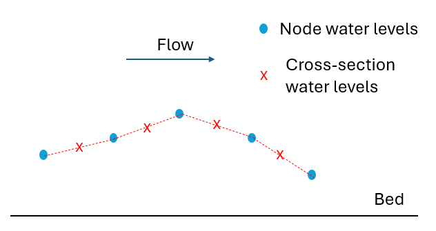
TUFLOW Classic uses second order interpolation, and TUFLOW HPC defaults to second order interpolation, but does offer the user the choice to switch to first order (see Solution Scheme). However, for the reasons above using a first order interpolation solution is not recommend. Second order interpolation is significantly more accurate than first order, and this shows in cell-size sensitivity testing. The TVD scheme implemented in TUFLOW HPC is very stable, and the user should not need to change to first order interpolation in order to stabilise a model.
3.4 Timestep
Appropriate computational timestep selection is critically important for the successful stable simulation of a model. In hydraulic modelling the timestep represents the interval at which the hydraulic calculations proceed forward in time. From a model design perspective it influences both the simulation stability and overall runtime considerations.
Depending on the numerical construct and solution scheme there are critical control number criterion that must not be exceeded to maintain solution stability. Additionally, the simulation run time is directly proportional to the number of timesteps required to calculate model behaviour for the simulation period. Selecting a timestep that is too large, exceeding the relevant control number criterion, may cause computations to become unstable. Conversely, selecting a timestep that is excessively small will unnecessarily slow a simulation down. The following sections provides timestep selection guidance.
3.4.1 Fixed versus Adaptive Timestepping
There are typically two approaches to how a model’s timestep is applied:
- Fixed Timestepping: The timestep is determined and input as a fixed value by the user. For TUFLOW modelling, this approach applies to TUFLOW Classic.
- Adaptive Timestepping: The timestep is automatically determined by the solution scheme and varies in value throughout the simulation depending on the hydraulic conditions at the time. TUFLOW HPC uses adaptive timestepping.
Note
TUFLOW’s in-built 1D solutions, TUFLOW 1D (ESTRY) and EPA SWMM, use a variety of fixed and adaptive timestepping, depending on the 2D solution it is linked to (TUFLOW Classic or HPC).
3.4.2 TUFLOW 1D (ESTRY) and EPA SWMM
TUFLOW 1D (ESTRY) and EPA SWMM both use an explicit solution scheme. For the 1D channels using either of these solvers the stability criterion, expressed by the following wave celerity Equation 3.7 and courant number Equation 3.8 equations, should not exceed 1.
\[ C_c = \frac{\Delta t \sqrt{gh}}{\Delta x} \tag{3.7}\]
\[ C_u = \frac{\Delta t \cdot U }{\Delta x} \tag{3.8}\]
Where:
- \(Cc\) = Wave celerity
- \(Cu\) = Courant number
- \(\Delta t\) = Timestep
- \(\Delta x\) = Distance
- \(g\) = Gravity
- \(h\) = Water depth
- \(U\) = Magnitude of velocity
The ESTRY Control File Timestep command is used to set the fixed TUFLOW 1D (ESTRY) timestep, or when linked with HPC, the maximum 1D timestep.
The TUFLOW SWMM Control File SWMM Iterations command sets the EPA SWMM timestep relative to the linked 2D solution timestep.
A fixed TUFLOW 1D (ESTRY) timestep is recommended for 1D/2D linked TUFLOW Classic models. The timestep selected should not be greater than the minimum value for any channel (except non-inertial channels such as bridges, culverts, etc.). Typical timestep values are 10 or 60 seconds for a model with a minimum channel length of 100 to 500 metres, down to 1 second for 1D network with small pipes. The occurrence of mass errors may indicate the use of too high a timestep.
Tip
Where a few TUFLOW 1D (ESTRY) channels must be significantly shorter than the rest, it may be economical to specify them as non-inertial channels. The timestep can then be chosen on the requirements of the shortest remaining channel. Care should however be exercised when specifying non-inertial channels to ensure that errors are not introduced by the non-inertial representation, particularly if these channels are in a region of interest. Any approximations can usually be assessed by a few selected runs without the non-inertial approximation and with the necessary shorter timestep.
In 1D/2D linked TUFLOW Classic models a TUFLOW 1D (ESTRY) Timestep value that is smaller and also equally divisible into the 2D Timestep is recommended. If the 1D timestep is not equally divisible into the smallest 2D timestep, the 1D timestep is reduced automatically so that it meets this criteria. For example, if the specified 2D timestep is 10 seconds and the 1D timestep is 3 seconds, the 1D timestep will be reduced to 2.5 seconds (this is reported in the simulation log file).
A fixed timestep is also required as the model input for 1D/2D linked TUFLOW HPC models, though functionally during simulation, timestep adjustment is applied to enable synchronised communication between TUFLOW 1D (ESTRY) and TUFLOW HPC’s adaptive timestep. In this situation the TUFLOW 1D (ESTRY) Timestep represents a “Maximum 1D Timestep”. The timestep synchronisation is shown Figure 3.13, and functions as follows:
- If the TUFLOW HPC 2D Timestep is greater than the Maximum TUFLOW 1D (ESTRY) Timestep: the 1D timestep is reduced to an integer division of the 2D timestep. For example, if the HPC 2D timestep is 1.2 s, and the ESTRY/SWMM 1D maximum timestep is 1.0 s, then ESTRY will use 0.6 s for its timestep and run two steps to HPC’s single step.
- If the TUFLOW HPC 2D Timestep is less than the Maximum TUFLOW 1D (ESTRY) Timestep: the 1D timestep is reduced to synchronise with the 2D timestep. The two cases are as follows:
- If the 2D timestep is greater than half the 1D timestep but less then the 1D timestep (i.e. 0.5 * Maximum TUFLOW 1D Timestep < TUFLOW HPC 2D Timestep < Maximum TUFLOW 1D Timestep), then the reduced 1D timestep is synchronised with every 2D timestep.
- If the 2D timestep is less than half the 1D timestep (i.e. TUFLOW HPC 2D Timestep < 0.5 * Maximum TUFLOW 1D Timestep), then the 1D timestep is synchronised with a multiple of the 2D timestep.
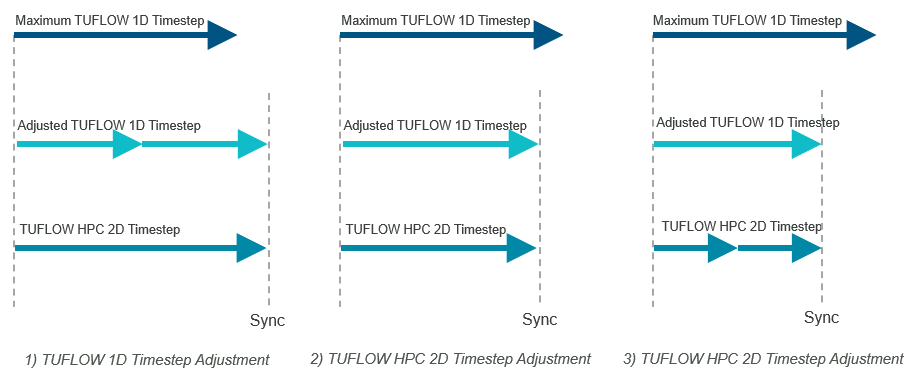
3.4.3 TUFLOW Classic 2D
TUFLOW Classic is a 2D implicit scheme. It can generally maintain a stable solution for a Courant Number (Equation 3.9) less than 10. For real-world applications a value of 5 or less is however more common (Syme, 1991).
\[ \text{C}_{\text{r}} = \frac{\Delta t\sqrt{2\text{gH}}}{\Delta x} \tag{3.9}\]
Where:
- \(\Delta t\) = Timestep (s)
- \(\Delta x\) = Length of model element (m or ft)
- \(g\) = Acceleration due to gravity (\({ms}^{- \frac{1}{2}}\))
- \(H\) = Depth of water (m or ft)
Note
Metric (SI) units are TUFLOW’s default. To use imperial units, ensure Units == US Customary has been specified in the .tcf.
As a general rule for 2D TUFLOW Classic models, the Timestep (in seconds) is typically in the range of \(\frac{1}{2}\) to \(\frac{1}{5}\) of the cell size (in metres). For example, for a 10m model the timestep will typical be in the range 2 to 5 seconds. For steep gradient models with high Froude numbers and supercritical flow, smaller timesteps may be required.
If a model is operating at high Courant numbers (>10), sensitivity testing with smaller timesteps to demonstrate no measurable change in result is recommended. The occurrence of high 2D mass error can be an indicator that the 2D timestep is too high.
Tip
If during initial model development a model becomes unstable, it is strongly advised to not simply reduce the timestep. Instead establish why the model is unstable and if the cause relates to poor model design or one of the model input error (e.g topography, boundary conditions, initial water level, 1D/2D linking etc.). If it is, correct that first before considering lowering the timestep. Doing so will create a healthy model that can operate at a higher timestep, and subsequently run faster. Section 16.3 includes guidance focused on resolving model instabilities.
3.4.4 TUFLOW HPC 2D
TUFLOW HPC is a 2D explicit scheme. It uses adaptive timestepping to progress through a simulation. The timestep is automatically dynamically adjusted during a simulation so the numerical solution complies with three mathematical stability criteria:
- Courant Number (Nu): This condition ensures that water entering one side of a 2D cell does not pass through the other side within one timestep. For this to be satisfied, the product of the water velocity (\(\upsilon\), \(\nu\)) and model timestep (\(\Delta t\)) must be less than the cell size (\(\Delta x\), \(\Delta y\)).
\[ max(\frac{|\upsilon|\Delta t}{\Delta x} , \frac{|\nu|\Delta t}{\Delta y}) = 1.0 \tag{3.10}\]
- Shallow Wave Celerity Number (Nc): This numerical condition relates to the shallow water wave celerity (wave speed) and is derived from the fluid flow equations to represent long waves (i.e. wave length is substantially longer than the water depth). The product of the model timestep (\(\Delta t\)) and the long wave speed (square root of the gravity (\(g\)) and water depth (\(h\))) must be less than the cell size (\(\Delta x\), \(\Delta y\)), for the condition to be satisfied.
\[ max(\frac{\sqrt{2\text{gh}}\Delta t}{\Delta x} , \frac{\sqrt{2\text{gh}}\Delta t}{\Delta y}) = 1.0 \tag{3.11}\]
- Diffusion Number (Nd): This numerical condition relates to the sub-grid scale eddy viscosity term which causes diffusion of momentum. To maintain stability, the product of the eddy viscosity coefficient (\(\text{v}_{\tau}\)) and the timestep (\(\Delta t\)) divided by the square of the grid spacing (\(\Delta x\), \(\Delta y\)) must remain below 0.3.
\[ max(\frac{\text{v}_{\tau}\Delta t}{\Delta x^2} , \frac{\text{v}_{\tau}\Delta t}{\Delta y^2}) = 0.3 \tag{3.12}\]
| Control Number | Description | Expression and Control Limit Maximum |
|---|---|---|
Courant Number (Nu) |
Limits movement of water across a 2D cell per timestep. |
|
Shallow Wave Celerity Number (Nc) |
Limits the maximum distance a water wave can travel per timestep. |
|
Diffusion Number (Nd) |
Limits momentum diffusion from the sub-grid eddy viscosity per timestep. |
TUFLOW HPC will use the highest timestep possible without exceeding the limits associated with each of the above control numbers. The method TUFLOW HPC uses to calculate a timestep and achieve unconditional stability is as follows:
- A TUFLOW Control File (TCF) Timestep command is required. It is however only used for the first calculation timestep. The specified value should be consistent with what would be appropriate for a TUFLOW Classic model (i.e. \(\frac{1}{2}\) to \(\frac{1}{5}\) the 2D cell size in metric units). Internally, TUFLOW HPC divides this value by 10 to apply a value that is suitable for an explicit solution scheme. All subsequent calculations are completed using the adaptive timestep approach outlined in the following bullet points.
- The HPC timestep is calculated using the hydraulic conditions from the end of the previous timestep.
- If the hydraulic conditions have changed significantly it is possible for one or more of the Nu, Nc, Nd control number criteria to be violated at one or more locations within the model. For example, a sudden change in rainfall from one timestep to the next (which occurs with stepped rainfall boundaries) would potentially cause this. The HPC solver, by default, treats a 20% exceedance of a control number as a violation and will implement a repeat timestep feature in this situation in order to maintain unconditional stability. Should a control number anywhere within the model be exceeded by more than 20%, the solution reverts to the complete hydraulic solution from the previous (good) timestep, then the timestep is reduced and next calculation repeated.
- Each timestep is also tested for the occurrence of NaNs. A NaN is “Not a Number” and occurs due to undefined mathematical calculations such as a divide by zero or square root of a negative number. The occurrence of a NaN is also indicative of a sudden instability. Should a NaN occur, the repeat timestep feature is implemented.
- Should a timestep need to be repeated more than ten times consecutively, the solution stops.
- The simulation will also stop if the default minimum permissible timestep of 0.1 seconds has been reached. This value can be manually adjusted using Timestep Minimum.Repeated timesteps are displayed to the Console Window and the number of them for a time interval are provided in the nRS_NaNs and nRS_HCNs columns in the _HPC.csv file output in the results folder. They are also reported to the _messages layer.
Internally, HPC multiplies the Nu, Nc, Nd control number limits by a dynamic control factor. This factor starts at 1.0 at the beginning of a simulation, and normally will stay at 1.0, unless a repeat timestep occurs. If a repeat timestep occurs, this factor is reduced to 90% of its previous value, thereby decreasing all of the control number limits. The dynamic factor very slowly increases again with each good timestep, up to a maximum value of 1.0. HPC offers two methods, via the HPC Timestep Approach command, for the calculation of whether a “high control number” event has occurred. ‘Method A’ considers that a high control number step has occurred if any of Nu, Nc, Nd has exceeded the dynamic control number limits (i.e. after the dynamic control factor has been applied) by the 20% margin. Whereas ‘Method B’ (introduced in the 2025 release and set as the new default) applies the test using the original static limits (i.e. before the dynamic control factor has been applied). Method B is more tolerant in models that have rapid wetting and drying.
Repeated timesteps may be an indication the solution is numerically “on-the-edge”. Models that have a high number of repeated timesteps should be sensitivity tested by reducing the control number limits using Control Number Factor. For example, repeat the simulation using Control Number Factor == 0.8 and compare the results. If there are acceptably immeasurable changes in the results, then running at the default control number limits can be considered satisfactory.
Tip
Reviewing the TUFLOW HPC minimum timestep output is a useful way to assess HPC model health. Models that reduce to an excessively small 2D timestep in order to remain stable may be symptomatic of an unhealthy model. Identifying what the limiting control number is that is causing the timestep requirement can provide clues to the model feature to review for errors. For example:*
- Celerity Control (Nc) number relates to water depth relative to cell size. Energy can pass through deeper water faster than shallow water, as such deep water will trigger this control. Review whether the water depth is realistic, or the result of an error in the model topography.
- Courant number (Nu) relates to velocity relative to the cell size. High velocities will trigger this as the control. Investigate whether the feature causing the high velocity is realistic.
- Diffusion control (Nd) relates diffusion of momentum relating to the sub grid viscosity. Small cells in deep water will trigger this one. Models controlled by the diffusion number tend to require a timestep significantly smaller than those controlled by the shallow wave celerity or courant numbers. If a model is predominantly diffusion controlled it may be that equivalent solution accuracy can be achieved by selecting a larger cell size. This is worth testing, as it will most likely increase the simulation speed with no loss of result fidelity.*
Section 16.3 includes guidance focused on reviewing model health and resolving issues.
3.4.4.1 Timestep Efficiency Output
A timestep efficiency result is output for HPC simulations, reported to the console window, HPC log file (.hpc.tlf) and the timestep history file (.dt.csv). A value of 100% indicates that the HPC timesteps are perfectly aligned with the minimum stability timestep for complying with the three control numbers listed in Table 3.2. Factors that reduce the timestepping efficiency can be:
- Lower initial timestep than required. This will be evident by low values at the start, then steadily increasing towards 100% as the timestep approaches the optimum value – see example further below.
- Synchronisation with a 1D scheme. The 1D/2D linking with TUFLOW’s 1D solver (ESTRY) is designed to synchronise exactly using the larger of the 1D or 2D timesteps. For external 1D schemes, the timestepping is similarly synchronised, with some external 1D schemes also offering an unsynchronised option. In all cases, the HPC 2D timestepping will be below optimum by varying degrees, with the inefficiency shown in the timestepping efficiency output.
- Frequent map or time-series output. The HPC timestepping is configured to align exactly with map and time-series output intervals. Timesteps nearly always need to be reduced as an output interval is approached. These reduced timesteps can be found in the “dt” column of the hpc.dt.csv file. The ideal timestep without the output interval reductions is reported in the “dtStar” column.
For example, in the output window below, the efficiency is initially poor (~40%) due to the initial timestep in the model being too low, however the efficiency rapidly increases as the HPC timestep increases.
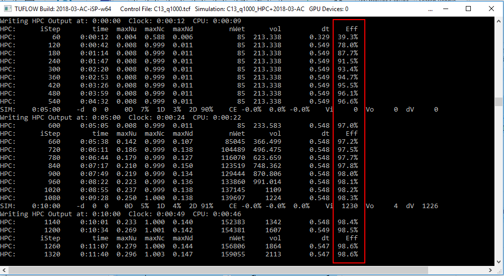
Note
Should a model exhibit low overall timestepping efficiency (i.e. values less than around 70 to 90%), please let us know via support@tuflow.com, and attach the .tlf, .hpc.tlf and dt.csv files.*
3.5 Simulation Times
The simulation time of a model is dependent on several factors including:
- The area to be modelled
- The cell size of the model
- The number of cells that are wet
- The duration of the simulation
- The solution scheme (TUFLOW Classic or TUFLOW HPC)
- Computer Hardware (CPU or GPU)
Each of the factors listed above should be considered during the development of a model.
A simple spreadsheet has been created to estimate TUFLOW Classic simulation times based on the cell size, catchment area and model run time (i.e. event duration). The spreadsheet can be downloaded from the TUFLOW Wiki Estimating Runtimes. This spreadsheet is a basic guide, as it has several simplified assumptions, including the timestep, number of calculations per second the computer can run and fraction of wet cells (this will change throughout the simulation). Acknowledging these assumptions, it is still a useful guide. further consideration of the model design is recommended if the spreadsheet is estimating excessively long simulation times.
The speed at which TUFLOW simulations will run is dependent on the hardware used. Newer and higher CPU frequency computers will run faster than older lower CPU frequency computers. A hardware benchmark model is available from the TUFLOW Wiki Hardware Benchmarking. This page also contains the simulation times for the same model on a large range of computers and GPU devices.
There are several other secondary factors that can affect the speed performance of TUFLOW simulations, including:
- The latency to the location where results are being written. For fastest speed, write results directly to a local computer hard drive. Lower latency associated with writing to an external hard drive can slow a simulation down significantly.
- How frequently output is written, with more frequent output slowing the simulation.
- The output format(s) selected. XMDF and DAT formats are quicker to write than grid raster output types (TIF, FLT and ASC). Use XMDF format for temporal Map Output. Reserve grid raster output formats for maximum results.
- Whether the single or double precision version of TUFLOW is used - the single precision version will be faster. This is discussed in Section 13.3.2.
These factors are typically less significant than the primary factors listed at the start of this section (model size, cell count etc.).
As outlined in Chapter 12, the GPU Module may be utilised to increase simulation speed using TUFLOW HPC. The speed up ratio compared to CPU varies depending on model particulars and the hardware used. Nevertheless, the typical range in performance increase experienced using current technology (at the time of writing) is a 10x to 50x increase in simulation speed.